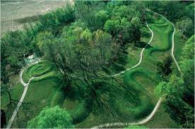

156. Great Serpent Mound. Adams county, southern Ohio. Mississippian. c. 1070 CE Earthwork/effigy mound.
- Context
- Many mounds were enlarged and changed over the years, not built in one campaign
- Effigy mounds popular in Mississippian culture
- Associated with snakes and crop fertility
- There are no burials associated with this mound, though there are burial sites nearby
- Theories
- Influenced by comets? Astrological phenomenon? Head pointed to summer solstice sunset?
- Theory that it could be a representation of Halley’s Comet in 1066
- Rattlesnakes as a symbol in Mississippian iconography; could this play a role in interpreting this mound?